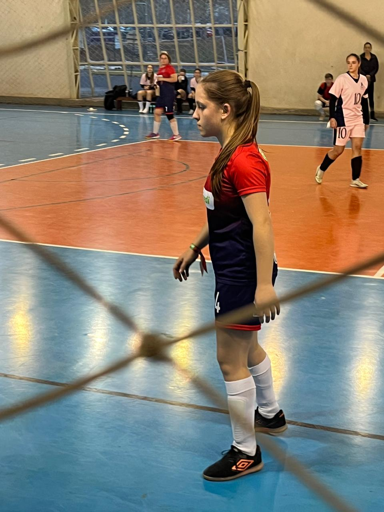
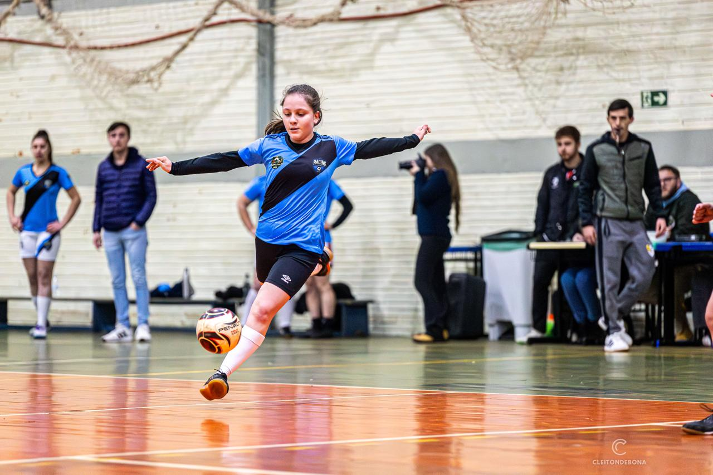

Para mim, o futsal representa muito mais do que apenas um esporte. Ele envolve emoção, dedicação, responsabilidade e trabalho em equipe. Além disso, é uma atividade que exige foco, determinação e esforço dentro da quadra.

O que mais me chama atenção no futsal é a velocidade do jogo e a intensidade das partidas. Cada lance exige raciocínio rápido, habilidade e cooperação entre os jogadores. Isso torna o esporte emocionante e muito competitivo.
Na minha opinião, o futsal ajuda no desenvolvimento físico, melhora o raciocínio rápido, incentiva a disciplina e fortalece o trabalho em equipe. Também é uma forma de aprender responsabilidade e convivência com outras pessoas.
O Futsal é um esporte que transmite emoção, competitividade e união. Por isso, ele se tornou uma atividade muito importante para mim, fazendo parte de vários momentos especiais da minha vida.
